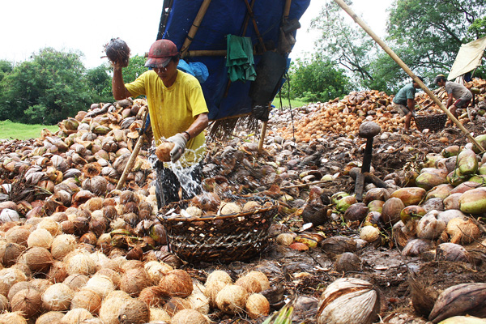
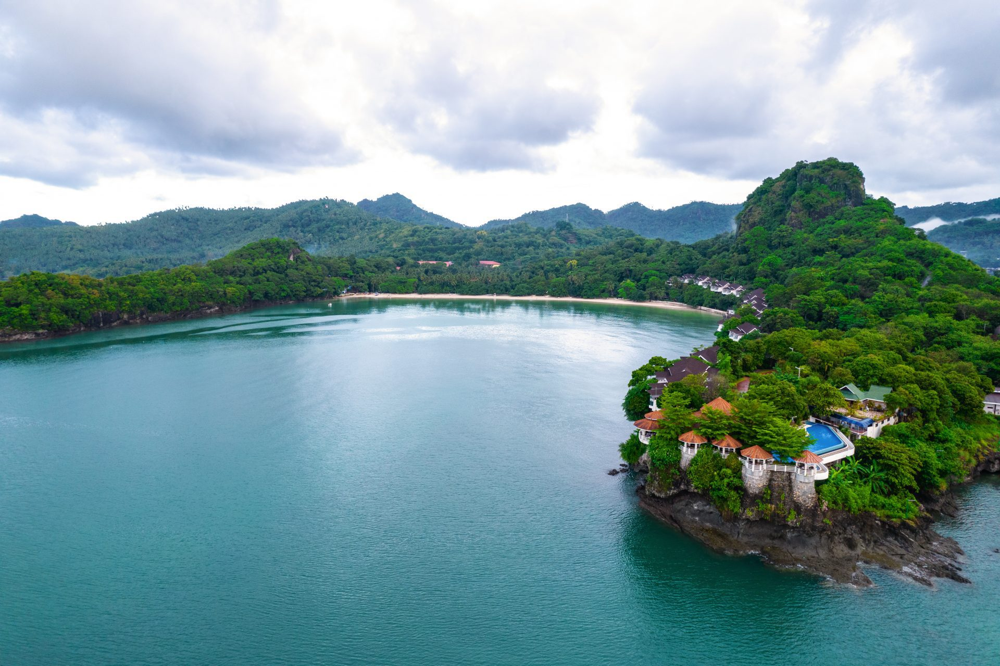
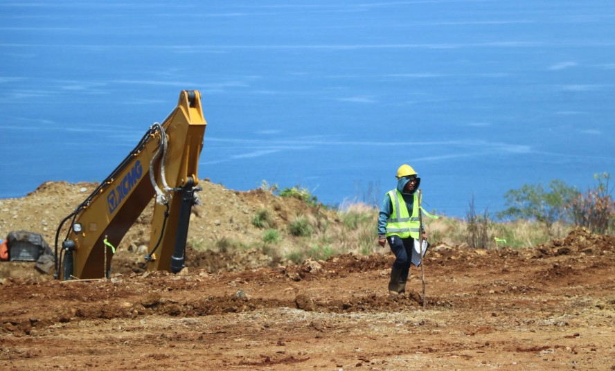
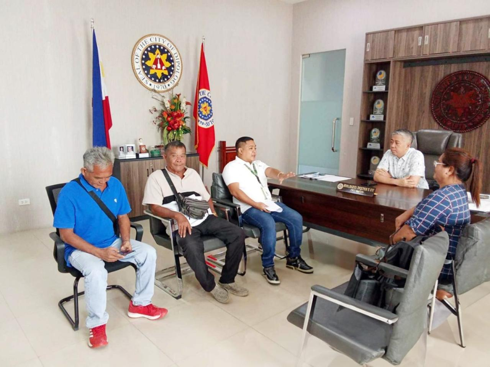
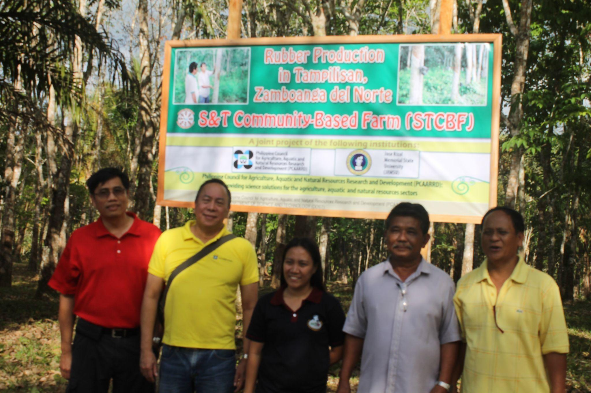

The economy of Zamboanga del Norte is rooted in agriculture, fishing, and natural resource-based industries that have sustained its communities for generations. The province's fertile lowlands produce copra, rice, corn, rubber, and a variety of tropical fruits, while its extensive coastlines support one of the most productive fishing industries in the Zamboanga Peninsula.
In recent decades, Zamboanga del Norte has been expanding its economic base through the growth of trade and commerce in Dipolog City, the development of small and medium enterprises (SMEs), and the gradual rise of tourism as an economic driver. The province's strategic location along the Sulu Sea and Bohol Sea coastlines, combined with improving road infrastructure and air connectivity through Dipolog Airport, positions it as an emerging regional economic center in western Mindanao.
The provincial government has prioritized investments in agriculture modernization, fishery development, cooperative enterprise, and agro-industrial processing to create more value-added economic activity and generate sustainable employment for its growing population of over one million people across its 25 municipalities and 2 component cities.
Key Economic Sectors
The industries and livelihoods that drive the economy of Zamboanga del Norte.
'">
Primary Sector
Agriculture
Agriculture is the foundation of Zamboanga del Norte's economy. The province is a major producer of coconut and copra — one of the leading coconut-producing provinces in Mindanao — alongside significant production of rice, corn, rubber, banana, and various root crops.
Province-wide Coconut · Rice · Rubber · Corn
'">Primary Sector
Fisheries & Aquaculture
Flanked by the Sulu Sea and the Bohol Sea, Zamboanga del Norte is endowed with rich marine resources. Commercial and municipal fishing are major economic activities in coastal municipalities, with Dipolog City and Sindangan serving as key fishing ports.
Coastal Municipalities Commercial Fishing · Aquaculture

Coconut & Copra
Agro-Industry
Coconut & Copra Industry
Zamboanga del Norte is one of the Philippines' important coconut-producing provinces. Copra — dried coconut meat used to produce coconut oil — is the single most important agricultural export commodity of the province, supporting thousands of farming families.
Lowland Municipalities Copra · VCO · Coconut Oil

Tertiary Sector
Trade & Commerce
Dipolog City serves as the commercial and trading hub of Zamboanga del Norte, hosting the province's major public markets, shopping malls, banking institutions, and business districts. Retail trade, wholesale distribution, transport services, and financial services are the dominant commercial activities.
Dipolog City · Dapitan City Retail · Wholesale · Services

Tourism Industry
Emerging Sector
Tourism Industry
Tourism is one of Zamboanga del Norte's fastest-growing economic sectors, driven by world-class destinations such as Dakak Beach Resort in Dapitan City, the historically significant Rizal Shrine, and the province's rich natural and cultural heritage.
Dapitan City · Province-wide Hospitality · Heritage · Ecotourism

Mining & Quarrying
Extractive Industry
Mining & Quarrying
The mineral-rich geology of the Zamboanga Peninsula supports small-scale and artisanal mining activities in several interior municipalities. Sand, gravel, and stone quarrying supply the construction industry, while metallic mineral deposits including gold and chromite are present in the highland zones.
Interior Municipalities Sand & Gravel · Gold · Chromite
Small & Medium Enterprises
'">Private Sector
Small & Medium Enterprises
The SME sector is the backbone of economic activity in Zamboanga del Norte's municipalities. Small businesses engaged in food processing, native crafts, furniture making, garment production, and agri-based processing are found throughout the province.
Province-wide Cottage Industry · Food Processing · Crafts

Government & Education
Public Sector
Government & Education Services
The public sector is a major employer in Zamboanga del Norte, with government agencies, state colleges and universities, public hospitals, and local government units providing employment across all municipalities. Jose Rizal Memorial State University (JRMSU) is a significant economic institution, serving thousands of students and faculty.
Dipolog City · Dapitan City Public Employment · Education · Healthcare

Rubber Industry
Agro-Industry
Rubber Industry
Rubber cultivation has grown steadily in Zamboanga del Norte as an alternative crop for upland and interior farming communities. Natural rubber tapping provides a reliable income source for smallholder farmers in municipalities such as Sindangan, Siayan, and surrounding areas.
Sindangan · Siayan · Interior Municipalities Natural Rubber · Upland Agriculture